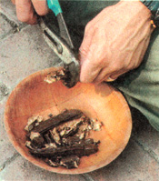

Issue #175 - August/September 1999
COUNTRY LORE
For those times when you're too jangled for coffee and tea just won't do it.
NO, thisisn't going to be a discussion about the various pros and cons of drinking coffee. We drink coffee regularly (some say habitually) and greatly enjoy it. Few pleasures equal that of savoring a freshly ground, freshly brewed mug of top-quality java, with honey, molasses or a mix of raw cream and soy milk.
Still, there are times when our bodies want something else-something warming and filling, but with none of the "speed" of coffee. Fortunately, there are many coffee alternatives. You can drink them straight or with honey or cream or both. Some you can buy, while others you have to make yourself.
By sampling as many of the following as you can find in your area, you'll come to know their individual flavors and aromas. Once accustomed, you may want to try some in combination or experiment with lighter or darker roasts.
Just about everyone who makes his or her own "backwoods coffee" eventually settles on a favorite blend and recipe. We've no doubt you will, too.
Acorns grow worldwide, falling from oak trees ( Quercus ) in the autumn. They tend to be most abundant during September and October. Acorns are bitter when raw and so must be peeled and then "leached"-boiled or soaked to remove the tannic acid. Once the bitterness is gone, your options are many.
If you want to use processed acorns in your "coffee" blend, grind it coarsely. Roast the acorns as dark or light as you generally like your coffee. Keep in mind, however, that in all cases, the darker roasts (those that are nearly black) can be borderline carcinogens, the level of risk depending on the material being roasted. This is due to the fact that you are nearly burning the material; excess heat causes a change in the oils that makes them detrimental-even possibly cancer-causing-if consumed. We generally roast to a brown color, sometimes dark brown, but never let it approach black.
Burdock root ( Arctium minus and A. Iappa ) also makes a delicious coffee substitute. And, as an added bonus, it's well-known for its medicinal uses. Herbalists have long used burdock as a blood purifier, as well as to soothe the symptoms of rheumatism.
For coffee, we generally prefer the first-year root, though the tougher second-year root may also be used. Wash the burdock, then grate it or cut it into slices. Slowly dry it in your oven and then grind coarsely. Roast the ground burdock to desired darkness, then mix in your coffee blends.
Collect coffeeberry fruits in the fall when they will have turned nearly black. Remove all of the seeds; this is most easily done by simply rubbing the fruits between your hands in a dish pan, then washing away the pulp (the pulp can then be put into your compost pile).
When you're down to just seed, let them dry, then roast them until brown. Grind the roasted seed and percolate as you would ordinary coffee.
Though a bit on the weak side, the flavor and aroma of coffeeberry is very much like traditional coffee and, with some honey and cream, it really can pass for the old familiar-but without the caffeine. Note that, despite the name, California coffeeberry ( Rhamnus californica ) is not related to regular coffee at all. Rather, it is a relative of the highly prized cascara buckthorn ( Rhamnus purshiana ).
The carob pod grows on a large tree native to the Mediterranean ( Ceratonia siliqua ). The pods mature brown and can be eaten right off the tree. They are sweet and rich in calcium and B vitamins.
When ground, roasted and percolated into a coffee-like beverage, carob pods will have a sweet and heavy aroma and flavor. The brew from the carob pod will be only slightly reminiscent of regular coffee, but is pleasing nonetheless. Before grinding the pods, be sure to break them open and remove all of the hard seeds.
Chicory root ( Cichorium intybus ) has long been used in the South as a coffee substitute. While many people like chicory, others find it too bitter. It's a matter of personal taste, of course.
Ideally, the roots should be dug before the plant flowers. Wash the roots and let them dry. Then, break up the roots or grind them coarsely and roast them. The dark French roast is very popular for chicory, but we find it quite acceptable when roasted to a mild brown. Percolate as you would ordinary coffee grounds and serve with raw, unheated honey and cream.
Chicory is also commonly added to regular coffee grounds as an extender. In fact, you can extend regular coffee with any of the alternatives mentioned here.
Dandelion ( Taraxacum officinale ) is second only to chicory as a coffee substitute. To prepare the dandelion root, follow the instructions for chicory. Though it is somewhat better to collect the dandelion roots before the plants flower, as a practical matter it is easier to locate the plants when you can see the yellow tops. Either way, the roots make a good coffee-with even more flavor, in our opinion, than the chicory blend.
Various grains have long been roasted and percolated like coffee or added to different coffee blends. Barley and wheat are popular and can be found in several commercial alternative coffees.
Most of the wild grass seeds will work as coffee alternatives as well. Experiment to discover which ones you prefer. Keep notes as you try the various wild grasses in your area, so you can repeat any recipes you find to your liking.
Sow thistle ( Sonchus ) is a common plant with worldwide distribution. Its roots tend to be smaller and more tender than those of its cousin, dandelion. Nevertheless, treat these roots as you would dandelion, and either use them alone or mixed with other wild plants as a coffee substitute or extender.
These are by no means the only roots and seeds you can use to make your backwoods coffees. You can also of course buy coffee alternatives at the market. But by learning to collect our own foods, our own herbs, our own "coffees," we become more attuned to the wild bounty of the natural world, a necessary step on our journey toward self-reliance.
Send your ideas to "Country Lore,"c/o Mother Earth News P.O. Box 129, Arden, NC 28704 or-e-mailMEarthNews@aol.com.
Please be sure to include your telephone number and a photograph if available.
|
PHOTOS BY: CHRISTOPHER AND DELORES NYERGES WILD ACORNS |
Buldock |
Christopher enjoys a mug of home brew made from coffee seed . |
|
A California coffeeberry tree in fruit. |
Ripe Carob pods and leaf |
Pods being cracked for seed removal |
|
 common dandelion root makes a great coffee when washed, dried, ground and roasted. |
|
|